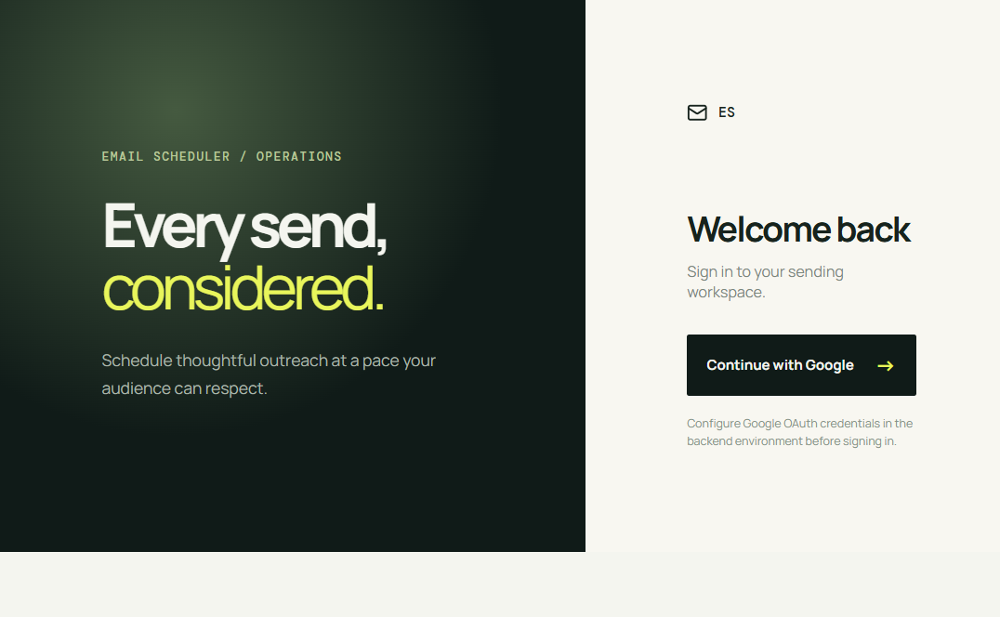

REACHINBOX / OPERATIONSEvery send,
considered.
A persistent, rate-aware email scheduler built with BullMQ and Redis.
Product Surface
The dashboard gives authenticated users a focused workspace for scheduling and reviewing individual recipient sends.

System Flow
React dashboard
-> Express REST API
-> PostgreSQL + Prisma campaign records
-> Redis + BullMQ delayed jobs
-> Worker: claim, rate-limit, send
-> SMTP provider
-> Elasticsearch index
-> Scheduled / Sent dashboard
Bull Board monitors waiting, active, delayed, completed, and failed jobs.
Implementation Highlights
Persistent schedulingDelayed jobs live in Redis and survive application restarts.
IdempotencyAtomic database claiming prevents the same EmailJob from being sent twice.
Individual deliveryEach CSV address becomes one EmailJob and one SMTP message.
Controlled throughputWorker concurrency, inter-email delay, and Redis hourly limits protect the provider.
Local Demo
Run Docker infrastructure, start the API, worker, and Vite frontend, then open http://localhost:5173. Ethereal provides preview-only testing; Gmail, Brevo, SendGrid, Mailgun, or SES deliver to real inboxes.